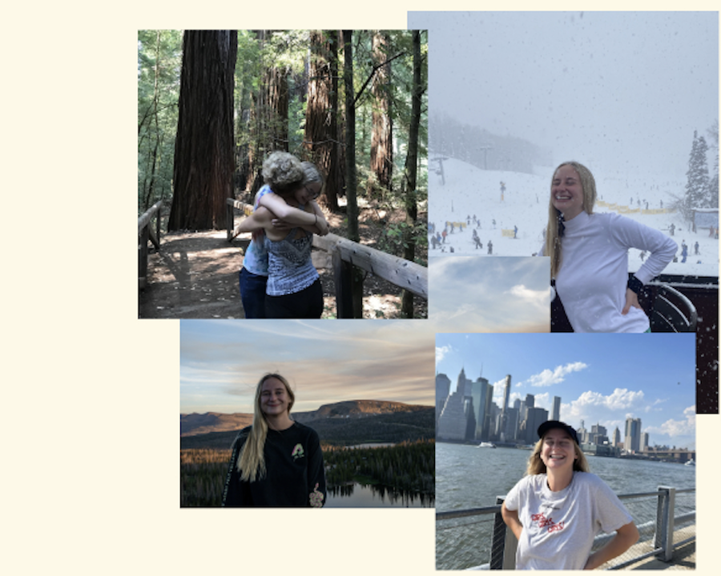

About Me
-
I am a student enrolled in Loyola Marymount University's Class of 2024, currently pursuing a major in Computer Science with a specialized focus on Artificial Intelligence, complemented by a minor in Interactive Gaming and Immersive Media. My love for programming dates back to my middle school days, where I successfully advocated for the introduction of a computer science course. Throughout high school, my commitment to computer science deepened, and I discovered a passion for sharing knowledge by volunteering to teach 4th graders the fundamentals of computer science. This affection for helping others transferred into my college career when I became a TA for other CS students. College life also continued to fuel my coding passion, and I work best in Python, Java, HTML, CSS, and Javascript. I realized that my love for computer science was rooted in my love of creation and I found a parallel passion for video game development and animation. Competent in both Unreal Engine and Adobe Animate, I enjoy the intersection between technology and artistry. Whether collaborating within a team or pursuing individual projects, my ultimate fulfillment lies in meaningful connections with others. Outside of the classroom, I enjoy reading, video games, camping, skiing, skateboarding, football, stand-up comedy, and playing board games with friends.
Contact Me: (801)-889-5045 aarmknec@lion.lmu.edu


- 
Relevant Coursework
Projects
Mobile App
Party Finder, my final project in mobile app development, caters to college students. The app allows users to discover nearby parties, RSVP, view live party ratings, and report inappropriate users to ensure a safe enviroment. Despite its lighthearted nature, Party Finder integrates multiple APIs, connects to Firebase, and was voted the best app idea in the class.
Pac-Man AI
For my Cognitive Systems course, I developed a Pac-Man AI as a capture-the-flag esc exercise.
Trained with approximate Q-learning over numerous iterations, the agent had a defensive strategy
patrolling the border and an offensive strategy collecting pellets and returning them to home base.
In the class tournament, my Pac-Man agent earned second place.
Check out the code
here.
Escape
Escape, my final project in Advanced Animation using Unreal Engine 5, immerses the player in a captivating scenario where they must navigate through a hotel, solving a series of puzzles to break free from multiple rooms and hallways. The entire project, from designing and constructing the environment to fine-tuning mechanics and puzzles, was accomplished within a month.
Briefcase
I served as the front-end developer for Briefcase, a continuing senior project in collaboration with the Innocence Project. Our app utilizes artificial intelligence to analyze and summarize court transcripts, aiding lawyers in reviewing cases of the wrongfully incarcerated. Briefcase seamlessly integrates PDF transcript files, providing a digital platform with analysis features, collaboration tools, and intuitive navigation for enhanced user interaction.
YeeHaw

In my junior year Languages and Automata course, my team and I developed YeeHaw, a cowboy-themed programming language designed for beginners to grasp logic concepts comfortably. YeeHaw is a statically typed and inferred language, following an object-oriented programming paradigm. The language features southern hospitality-inspired error messages to enhance the learning experience.
Work Experience
Website designer Intern
In life's fleeting dance, a phrase takes its chance, YOLO whispers boldly, an existential trance. One chance to tread this cosmic sphere, Carpe diem echoes, dispelling fear. A moment's breath, a heartbeat's choice, YOLO, a resounding, liberated voice. Embrace the now, the highs, the lows,...
Teaching Assistant
In life's fleeting dance, a phrase takes its chance, YOLO whispers boldly, an existential trance. One chance to tread this cosmic sphere, Carpe diem echoes, dispelling fear. A moment's breath, a heartbeat's choice, YOLO, a resounding, liberated voice. Embrace the now, the highs, the lows,......
CSSI TA
In life's fleeting dance, a phrase takes its chance, YOLO whispers boldly, an existential trance. One chance to tread this cosmic sphere, Carpe diem echoes, dispelling fear. A moment's breath, a heartbeat's choice, YOLO, a resounding, liberated voice. Embrace the now, the highs, the lows,......